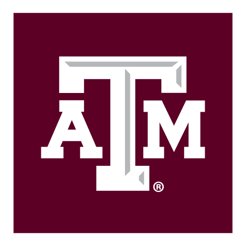

The Modern Bowl Playoff (MBP) is a data driven college football ranking system, taking into account 7 major computer rankings used by the BCS from 1998-2013, the AP Top 25 Poll, and USA Today Coaches Poll to fully capture all aspects considered by human and computer ranking systems. More importantly, the MBP provides a clear formula behind each team's ranking, a component missing throughout the current playoff era. For Week 15 in the 2018 College football season, the MBP produces this Top 25:
| Rank | Team | Score | CFP | Human | Computer |
|---|---|---|---|---|---|
| 1 |
|
0.992 | 1 | 1 | 1 |
| 2 |
|
0.960 | 2 | 2 | 2 |
| 3 |
|
0.893 | 3 | 3 | 3 |
| 4 |
|
0.860 | 5 | 5 | 4 |
| 5 | Oklahoma | 0.834 | 4 | 4 | 6 |
| 6 |
|
0.830 | 6 | 6 | 5 |
| 7 |
|
0.765 | 7 | 7 | 7 |
| 8 |
|
0.639 | 8 | 8 | 9 |
| 9 |
|
0.619 | 11 | 11 | 8 |
| 10 |
|
0.611 | 9 | 9 | 10 |
| 11 |
|
0.571 | 10 | 10 | 11 |
| 12 |
|
0.533 | 12 | 12 | 12 |
| 13 |
|
0.463 | 13 | 13 | 13 |
| 14 |
|
0.401 | 14 | 14 | 17 |
| 15 |
|
0.389 | 18 | 17 | 15 |
| 16 |  Texas A&M | 0.372 | 19 | 20 | 14 |
| 17 |
|
0.328 | 16 | 16 | 18 |
| 18 |
|
0.287 | 23 | 23 | 16 |
| 19 |
|
0.253 | 21 | 21 | 19 |
| 20 | Syracuse | 0.237 | 20 | 19 | 20 |
| 21 |
|
0.233 | 15 | 15 | 24 |
| 22 | Utah | 0.225 | 17 | 18 | 21 |
| 23 |
|
0.107 | N/R | 29 | 22 |
| 24 |
|
0.091 | N/R | 33 | 23 |
| 25 |
|
0.077 | 25 | 24 | 28 |
Conference champions were decided this week, and all of our assumptions from previous weeks held true. In fact, the 8 teams selected remained the same: